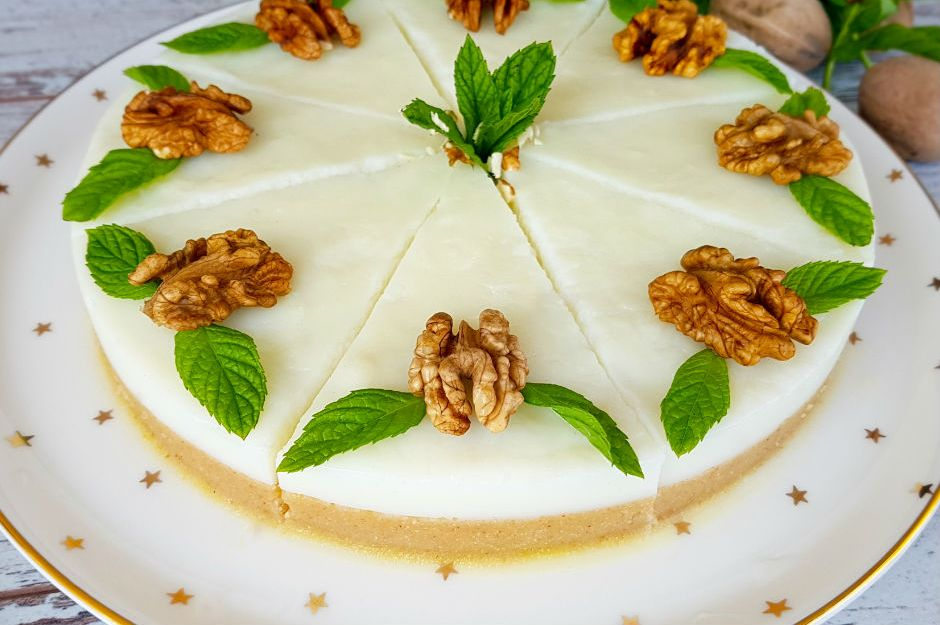

Dumanı Üstünde! Lahmacun
Lahmacun Tarifi
Antepte Balcan Derler: Patlıcan Kebabı!
Patlıcan Kebabı Tarifi
İzmir'e Selam: Tire Köfte!
Tire Köfte Tarifi
On Bir Ayın Prensesi:Güllaç!
Güllaç Tarifi
Sizin İçin Seçilen Muhteşem Tariflere Göz Atın!
Soğuk Çorba
Sıcak yaz günlerinin kurtarıcısı, sağlıklı bir öğün, ramazan sofralarının olmazsa olmazıdır soğuk çorbalar.Bu tarif de içinizi bir razaman akşamı gibi ferahlatacak!
Tavuk Suyuna Çorba
Destek kuvvet şart. Hastalara şifa, olmayanlara doğal koruma, tarifi aşağıda, tavuk suyuna çorba...
Sütlü Çorba
İçinde yer alan bulgur ile damağınızda doygun bir tat bırakırken, oldukça doyurucu olması sebebi ile bir çorbayla öğün geçirmek isteyenlerin de yüzünü güldürecek bir tarif.
Sarımsaklı Domates Çorbası
Sarımsaklar domatesin kendine has aroması ile birleşecek, un ve tereyağı çorbanın kıvamını belirleyecek. Güzelce piştikten sonra üzerine biraz taze kekik biraz da rendelenmiş kaşar peyniri gelecek ve damaklar şenlenecek.
Muhacır Köftesi
Market alışverişinizi yaptınız, eve geldiniz. 'Bugün ne pişirsem?' diye düşünüyorsunuz. O halde size oldukça kolay ve lezzetli bir tarifimiz var: Muhacir Köftesi!!
Etli Patates Yemeği
Etle patates bir tencereye girer, her evin en sevilen yemeği oluverir. Kalabalık aile sofralarını, evini, anneni hatırlatır.
Sarımsaklı Köfte
"Fellah Köftesi" denilen ve domates sosu ile hazırlanan bulgur köftesine de sarımsaklı köfte deniyor ancak bildiğimiz esas köfteyi de misket şeklinde ve sarımsaklı olarak hazırlamak mümkün.
Sulu Patates Yemeği
Mutlaka her evde pişmiştir bu nefis tarif. Annelerimizin vazgeçilmez ev yemekleri klasiğindendir sulu patates yemeği. Yanına bir pilav, bir ekmek konuldu mu, dünyanın en mütavazı ve lezzetli menüsüne dönüşür.
Belem Turtası
Orijinal tarifini dünya üzerinde sadece dört kişinin bildiği ve sırrının nesilden nesile aktarıldığı Belem turtası tarifini bugün sizlerle önemli tüm detaylarını paylaşarak sır perdesini aralamaya geliyoruz.
İrmikli Sütlü Tatlı
Bu tarif çay saatlerinizin vazgeçilmezlerinden olacak. İrmikli sütlü tatlı tarifimizden alır mısınız bir dilim?
Haşhaşlı Tatlı
Revaniyi sevenlerin haşhaşlı tatlıyı sevmemelerine olanak yok. Tatlının keki şerbetiyle buluşuyor, tarifinde yer alan haşhaş tohumları ağızda çıtır çıtır dağılıyor bu da yetmezmiş gibi tatlıya pasta lezzeti kazandıran krem şanti geliyor.
Çilek Jöleli Tatlı
Mutfak dediğin bir parça sevgi, tılsımlı bir dokunuş. Bu sevimli mi sevimli, çilek jöleli yarı şeffaf tatlılar da uzaktan imkansızı başarmış, ortadan ikiye kesilmiş bir çileği kendi içinde birleştirmiş gibi duruyor. Görünüşe aldanmayın derim.